7 Graafilised lahendused
R-s on kaks olulisemat graafikasüsteemi mida võib vaadata nagu kaht eraldi keelt mis mõlemad elavad R keele sees.
- Baasgraafika võimaldab väga lihtsate vahenditega teha kiireid ja suhteliselt ilusaid graafikuid. Seda kasutame sageli enda tarbeks kiirete plottide tegemiseks. Baasgraafika abil saab teha ka väga keerukaid ja kompleksseid publitseerimiskavaliteedis graafikuid.
- “ggplot2” raamatukogu on hea ilupiltide vormistamiseks ja keskmiselt keeruliste visualiseeringute tegemiseks.
Kuigi “ggplot2” ja tema sateliit-raamatukogud on meie põhilised huviobjekid, alustame siiski baasgraafikast. Ehki me piirdume vaid väga lihtsate näidetega tasub teada, et baasgraafikas saab teha ka komplekseid visualiseeringuid: http://shinyapps.org/apps/RGraphCompendium/index.php
Laadime peatükis edaspidi vajalikud libraryd:
library(tidyverse)
library(ggthemes)
library(ggrepel)
library(ggjoy)
library(wesanderson)7.1 Baasgraafika
Kõigepealt laadime tabeli, mida me visuaalselt analüüsima hakkame:
iris <- as_tibble(iris)
iris
#> # A tibble: 150 x 5
#> Sepal.Length Sepal.Width Petal.Length Petal.W… Spec…
#> <dbl> <dbl> <dbl> <dbl> <fct>
#> 1 5.10 3.50 1.40 0.200 seto…
#> 2 4.90 3.00 1.40 0.200 seto…
#> 3 4.70 3.20 1.30 0.200 seto…
#> 4 4.60 3.10 1.50 0.200 seto…
#> 5 5.00 3.60 1.40 0.200 seto…
#> 6 5.40 3.90 1.70 0.400 seto…
#> # ... with 144 more rowsSee sisaldab mõõtmistulemusi sentimeetrites kolme iirise perekonna liigi kohta. Esimest korda avaldati need andmed 1936. aastal R.A. Fisheri poolt.
Baasgraafika põhiverb on plot(). See püüab teie poolt ette antud andmete pealt ära arvata, millist graafikut te soovite. plot() põhiargumendid on x ja y, mis määravad selle, mis väärtused asetatakse x-teljele ja mis läheb y-teljele. Esimene argument on vaikimisi x ja teine y.
Kui te annate ette faktorandmed, on vastuseks tulpdiagramm, kus tulbad loevad üles selle faktori kõigi tasemete esinemiste arvu. Antud juhul on meil igast liigist mõõdetud 50 isendit.
plot(iris$Species)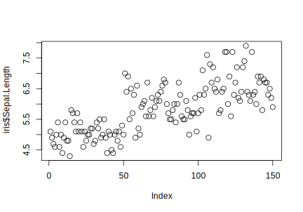
Kui te annate ette ühe pideva muutuja:
plot(iris$Sepal.Length)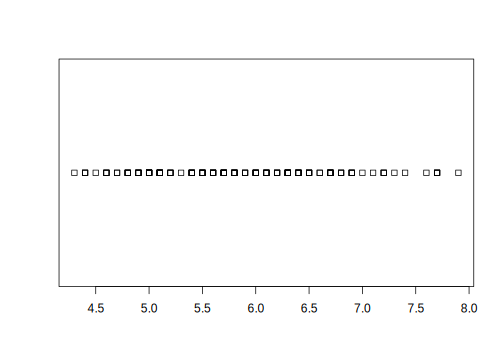
Nüüd on tulemuseks graafik, kus on näha mõõtmisete rea (ehk tabeli) iga järgmise liikme (tabeli rea) väärtus. Siin on meil kokku 150 mõõtmist muutujale Sepal.Length.
Alternatiiv sellele vaatele on stripchart()
stripchart(iris$Sepal.Length)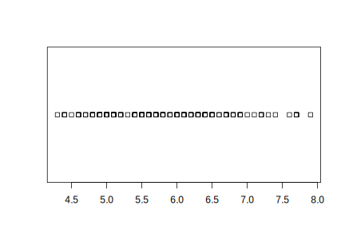
Enam lihtsamaks üks joonis ei lähe!
Mis juhtub, kui me x-teljele paneme faktortunnuse ja y-teljele pideva tunnuse?
plot(iris$Species, iris$Sepal.Length)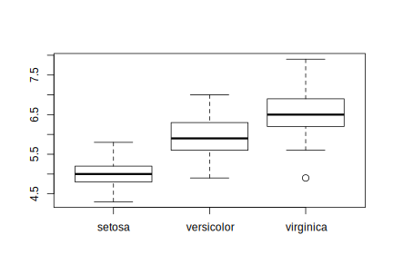
Vastuseks on boxplot. Sama graafiku saame ka nii:
boxplot(iris$Sepal.Length ~ iris$Species).Siin on tegu R-i mudeli notatsiooniga: y-telje muutuja, tilde, x-telje muutuja. Tilde näitab, et y sõltub x-st stohhastiliselt, mitte deterministlikult. Deterministliku seost tähistatakse võrdusmärgiga (=).
Aga vastupidi?
plot(iris$Sepal.Length, iris$Species)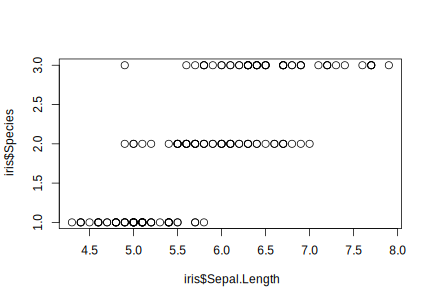
Pole paha, see on üsna informatiivne scatterplot.
Järgmiseks kahe pideva muutuja scatterplot, kus me veel lisaks värvime punktid liikide järgi.
plot(iris$Sepal.Length, iris$Sepal.Width, col = iris$Species)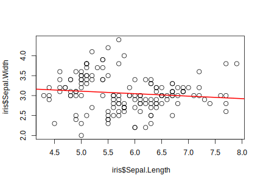
Ja lõpuks tõmbame läbi punktide punase regressioonijoone:
plot(iris$Sepal.Length, iris$Sepal.Width)
model <- lm(iris$Sepal.Width ~ iris$Sepal.Length)
abline(model, col = "red", lwd = 2)“lwd” parameeter reguleerib joone laiust. lm() on funktsioon, mis fitib sirge vähimruutude meetodil.
Mis juhtub, kui me anname plot() funktsioonile sisse kogu irise tibble?
plot(iris, col = iris$Species)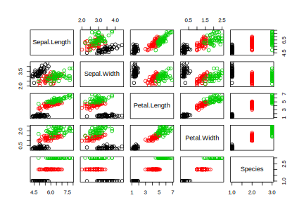
Juhhei, tulemus on paariviisiline graafik kõigist muutujate kombinatsioonidest.
Ainus mitte-plot verb, mida baasgraafikas vajame, on hist(), mis joonistab histogrammi.
hist(iris$Sepal.Length)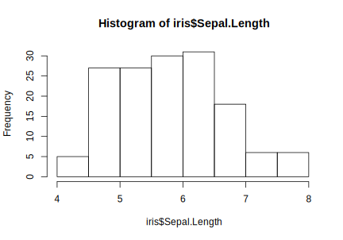
Histogrammi tegemiseks jagatakse andmepunktid nende väärtuste järgi bin-idesse ja plotitakse igasse bin-i sattunud andmepunktide arv. Näiteks esimeses bin-is on “Sepal.Length” muutuja väärtused, mis jäävad 4 ja 4.5 cm vahele ja selliseid väärtusi on kokku viis. Histogrammi puhul on oluline teada, et selle kuju sõltub bin-ide laiusest. Bini laiust saab muuta kahel viisil, andes ette bin-ide piirid või arvu:
hist(iris$Sepal.Length, breaks = seq(4, 9, by = 0.25))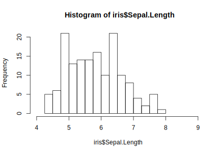
või
hist(iris$Sepal.Length, breaks = 15)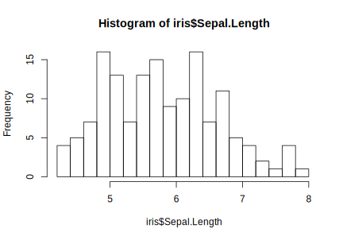
See viimane on kiire viis bin-i laiust reguleerida, aga arvestage, et sõltuvalt andmetest ei pruugi “breaks = 15” tähendada, et teie histogrammil on 15 bin-i.
Ja lõpuks veel üks histogramm, et demonstreerida baas R-i võimalusi (samad argumendid töötavad ka plot() funktsioonis):
hist(iris$Sepal.Length,
freq = FALSE,
col="red",
breaks = 15,
xlim = c(3, 9),
ylim = c(0, 0.6),
main = "Iris",
xlab = "Sepal length",
ylab = "Probability density")
abline(v = median(iris$Sepal.Length), col = "blue", lwd = 2)
abline(h = 0.3, col = "cyan", lwd = 2)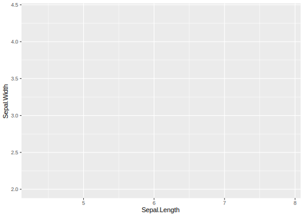
7.2 ggplot2
Ggplot on avaldamiseks sobiva tasemega lihtne aga võimas graafikasüsteem. Näiteid selle abil tehtud visualiseeringutest leiab näiteks järgnevatelt linkidelt:
- http://ggplot2.tidyverse.org/reference/
- http://www.r-graph-gallery.com
- http://www.ggplot2-exts.org
- http://www.cookbook-r.com
“ggplot2” paketi põhiverb on ggplot(). See graafikasüsteem töötab kiht-kihi-haaval ja uusi kihte lisatakse pluss-märgi abil. See annab modulaarsuse kaudu lihtsuse ja võimaluse luua ka keerulisi taieseid. Tõenäoliselt on ggplot hetkel kättesaadavatest graafikasüsteemidest parim (kaasa arvates tasulised programmid!).
ggploti töövoog on järgmine, minimaalselt pead ette andma kolm asja:
andmed, mida visualiseeritakse,
aes()funktsiooni, mis määrab, milline muutuja läheb x-teljele ja milline y-teljele, ninggeom, mis määrab, mis tüüpi visualiseeringut sa tahad.
Lisaks määrad sa aes()-is, kas ja kuidas sa tahad grupeerida pidevaid muutujaid faktori tasemete järgi.
Kõigepealt suuname oma andmed ggplot() funktsiooni:
ggplot(iris)Saime tühja ploti. Erinevalt baasgraafikast, ggplot-i puhul ainult andmetest ei piisa, et graafik valmis joonistataks. Vaja on lisada kiht-kihilt instruktsioonid, kuidas andmed graafikule paigutada ja missugust graafikutüüpi visualiseerimiseks kasutada.
Nüüd ütleme, et x-teljele pannakse “Sepal.Length” ja y-teljele “Sepal.Width” andmed.
ggplot(iris, aes(x = Sepal.Length, y = Sepal.Width))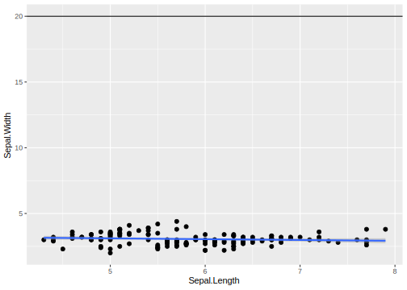
Aga graafik on ikka tühi sest me pole ggplotile öelnud, millist visualiseeringut me tahame. Teeme seda nüüd.
ggplot(iris, aes(x = Sepal.Length, y = Sepal.Width)) +
geom_point() +
geom_smooth(method = "lm")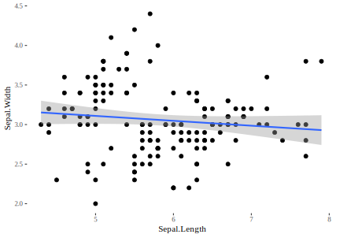
Me lisasime kaks kihti: esimene kiht geom_point() visualiseerib andmepunktid ja teine geom_smooth(method = "lm") joonistab regressioonisirge koos usaldusintervalliga (standardviga).
Plussmärk peab ggplot-i koodireas olema vana rea lõpus, mitte uue rea (kihi) alguses
7.3 Regressioonisirgete plottimine
Järgmiseks värvime eelnevalt tehtud plotil punktid iirise liigi kaupa aga joonistame ikkagi regressioonisirge läbi kõikide punktide.
Vaata mis juhtub, kui värvide lahutamine toimub ggplot()-i enda aes()-s. theme_classic() muudab graafiku üldist väljanägemist.
ggplot(iris, aes(x = Sepal.Length, y = Sepal.Width)) +
geom_point(aes(color = Species)) +
geom_smooth(method = "lm", color = "black") +
theme_classic()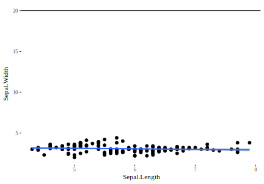
Me võime geom_smooth()-i anda erineva andmeseti kui ggplot() põhifunktsiooni. Nii joonistame me regressioonisirge ainult nendele andmetele. Proovi ka theme_bw().
ggplot(iris, aes(x = Sepal.Length, y = Sepal.Width)) +
geom_point() +
geom_smooth(data = filter(iris, Species == "setosa"), method = lm) +
theme_bw()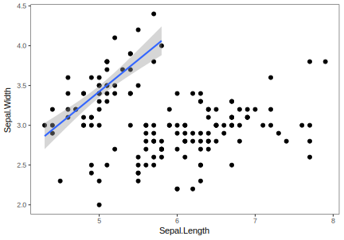
Alljärgnevalt näiteks moodus kuidas öelda, et me soovime regressioonijoont näidata ainult iiriseliikide virginica või versicolor andmetele.
## First we filter only data that we want to use for regressionline
smooth_data <- filter(iris, Species %in% c("virginica", "versicolor"))
## Then we use this filtered dataset in geom_smooth
ggplot(iris, aes(x = Sepal.Length, y = Sepal.Width)) +
geom_point() +
geom_smooth(data = smooth_data, method = lm)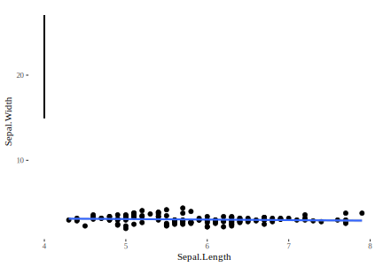
Ja lõpuks joonistame kolm regressioonisirget – üks igale liigile.
iris %>% ggplot(aes(x = Sepal.Length, y = Sepal.Width, color = Species)) +
geom_point() +
geom_smooth(method = "lm")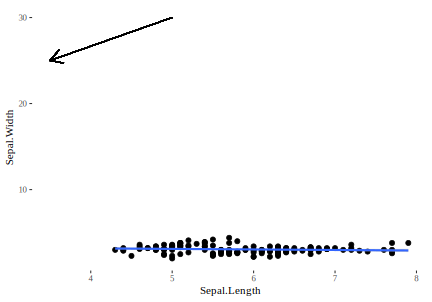
Nüüd üks näide teiste andmetega. Kaalutud lineaarne mudel on viis anda andmepunktidele, mida me tähtsamaks peame (või mis on täpsemalt mõõdetud) suurem kaal. Kõigepealt, siin on USA demograafilised andmed midwest “ggplot2” library-st erinevate kesk-lääne omavalitsuste kohta (437 omavalitsust).
Me valime midwest andmetest välja kolm muutujat: “percwhite”, “percbelowpoverty”, “poptotal”.
midwest_subset <- midwest %>% select(percwhite, percbelowpoverty, poptotal)
midwest_subset
#> # A tibble: 437 x 3
#> percwhite percbelowpoverty poptotal
#> <dbl> <dbl> <int>
#> 1 96.7 13.2 66090
#> 2 66.4 32.2 10626
#> 3 96.6 12.1 14991
#> 4 95.3 7.21 30806
#> 5 90.2 13.5 5836
#> 6 98.5 10.4 35688
#> # ... with 431 more rowsMe tahame teada, kuidas valge rassi osakaal ennustab vaesust, aga me arvame, et suurematel omavalitsustel peaks selles ennustuses olema suurem kaal kui väiksematel. Selleks lisame geom_smooth()-i lisaargumendi “weight”.
ggplot(midwest_subset, aes(percwhite, percbelowpoverty)) +
geom_point(aes(size = poptotal)) +
geom_smooth(aes(weight = poptotal), method = lm, size = 1) +
geom_smooth(method = lm, color = "red") +
labs(x = "Percent white", y = "Percent below poverty")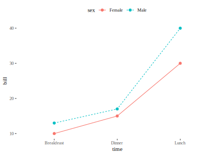
Punane on kaalumata regressioonisirge ja sinine on populatsioonisuuruse suhtes kaalutud regressioonisirge. Kaalumine mitte ainult ei muutnud sirge asukohta vaid vähendas ka ebakindlust sirge asukoha kohta.
Regeressioonijoone saab ggplotil määrata ka x-telje lõikumispunkti ja tõusu abil. See on kasulik mudelite visualiseerimisel mudeli koefitsientide põhjal. Kasuta geom_abline().
## Create plot
p <- ggplot(data = mtcars, aes(x = wt, y = mpg)) +
geom_point()
## Fit model and extract coefficients
model <- lm(mpg ~ wt, data = mtcars)
coefs <- coef(model)
## Add regressionline to the plot
p + geom_abline(intercept = coefs[1],
slope = coefs[2],
color = "red",
linetype = "dashed",
size = 1.5)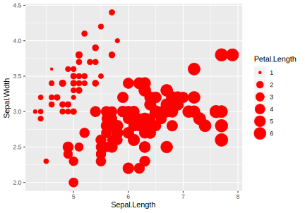
7.3.1 Lisame plotile sirgjooni
Horisontaalsed sirged saab graafikule lisada geom_hline() abil. Pane tähele, et eelnevalt me andsime oma ggplot-i põhikihtidele nime “p” ja seega panime selle alusploti oma töökeskkonda, et saaksime seda korduvkasutada.
Lisame graafikule horisontaaljoone y = 20:
# Add horizontal line at y = 2O
p + geom_hline(yintercept = 20)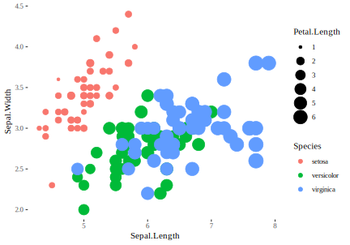
Vertikaalseid sirgeid saab lisada geom_vline() abil, näiteks vertikaalne sirge asukohas x = 3:
# Add a vertical line at x = 3
p + geom_vline(xintercept = 3)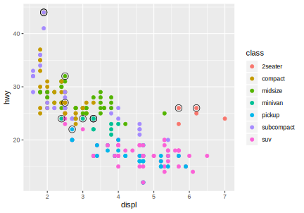
7.3.2 Segmendid ja nooled
“ggplot2” funktsioon geom_segment() lisab joonejupi, mille algus ja lõpp on ette antud.
# Add a vertical line segment
p + geom_segment(aes(x = 4, y = 15, xend = 4, yend = 27))
# Add horizontal line segment
p + geom_segment(aes(x = 2, y = 15, xend = 3, yend = 15))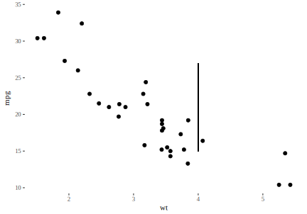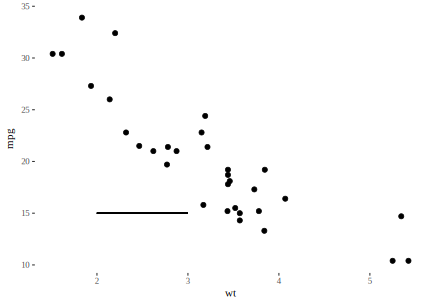
Saab joonistada ka nooli, kasutades arumenti “arrow” funktsioonis geom_segment()
p + geom_segment(aes(x = 5, y = 30, xend = 3.5, yend = 25),
arrow = arrow(length = unit(0.5, "cm")))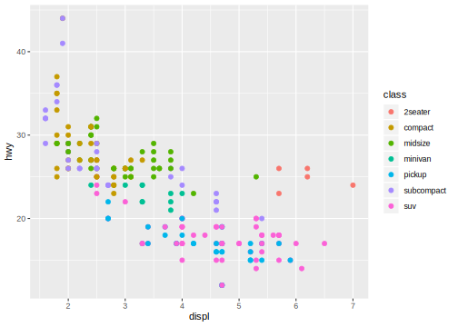
7.3.3 Joongraafikud
“ggplot2”-s on näiteks joonetüübid on “blank”, “solid”, “dashed”, “dotted”, “dotdash”, “longdash”, “twodash”.
meals <- data.frame(sex = rep(c("Female", "Male"), each = 3),
time = c("breakfeast", "Lunch", "Dinner"),
bill = c(10, 30, 15, 13, 40, 17) )
# Change line colors and sizes
ggplot(data = meals, aes(x = time, y = bill, group = sex)) +
geom_line(linetype = "dotted", color = "red", size = 2) +
geom_point(color = "blue", size = 3)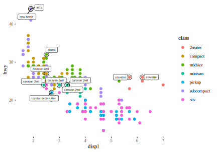
Järgneval graafikul muudame joonetüüpi automaatselt muutuja sex taseme järgi:
# Change line types + colors
ggplot(meals, aes(x = time, y = bill, group = sex)) +
geom_line(aes(linetype = sex, color = sex)) +
geom_point(aes(color = sex)) +
theme(legend.position = "top")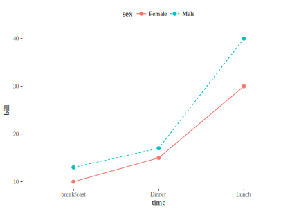
Muuda jooni käsitsi:
scale_linetype_manual(): joone tüüpscale_color_manual(): joone värvscale_size_manual(): joone laius
ggplot(meals, aes(x = time, y = bill, group = sex)) +
geom_line(aes(linetype = sex, color = sex, size = sex)) +
geom_point() +
scale_linetype_manual(values = c("twodash", "dotted")) +
scale_color_manual(values = c('#999999', '#E69F00')) +
scale_size_manual(values = c(1, 1.5)) +
theme(legend.position = "top")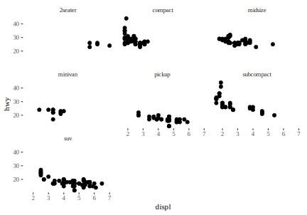
7.3.4 Punktide tähistamise trikid
aes() töötab nii ggplot() kui geom_ funktsioonides.
ggplot(iris) +
geom_point(aes(x = Sepal.Length, y = Sepal.Width, size = Petal.Length, color = Species))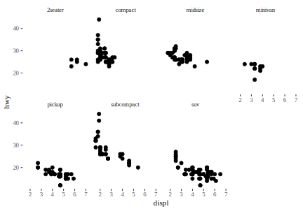
Kui me kasutame color argumenti aes()-st väljaspool, siis värvime kõik punktid sama värvi.
ggplot(iris) +
geom_point(aes(x = Sepal.Length, y = Sepal.Width, size = Petal.Length), color = "red")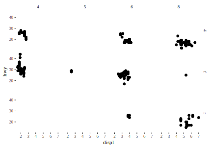
Kasulik trikk on kasutada mitut andmesetti sama ploti tegemiseks. Uus andmestik – “mpg” – on autode kütusekulu kohta.
head(mpg, 2)
#> # A tibble: 2 x 11
#> manufac… model displ year cyl trans drv cty
#> <chr> <chr> <dbl> <int> <int> <chr> <chr> <int>
#> 1 audi a4 1.80 1999 4 auto(l… f 18
#> 2 audi a4 1.80 1999 4 manual… f 21
#> # ... with 3 more variables: hwy <int>, fl <chr>,
#> # class <chr>
best_in_class <- mpg %>%
group_by(class) %>%
top_n(1, hwy)
head(best_in_class)
#> # A tibble: 6 x 11
#> # Groups: class [2]
#> manufa… model displ year cyl trans drv cty
#> <chr> <chr> <dbl> <int> <int> <chr> <chr> <int>
#> 1 chevro… corvet… 5.70 1999 8 manua… r 16
#> 2 chevro… corvet… 6.20 2008 8 manua… r 16
#> 3 dodge carava… 2.40 1999 4 auto(… f 18
#> 4 dodge carava… 3.00 1999 6 auto(… f 17
#> 5 dodge carava… 3.30 2008 6 auto(… f 17
#> 6 dodge carava… 3.30 2008 6 auto(… f 17
#> # ... with 3 more variables: hwy <int>, fl <chr>,
#> # class <chr>Siin läheb kitsam andmeset uude geom_point() kihti ja teeb osad punktid teistsuguseks. Need on oma klassi parimad autod.
ggplot(mpg, aes(displ, hwy)) +
geom_point(aes(colour = class))+
geom_point(size = 3, shape = 1, data = best_in_class) 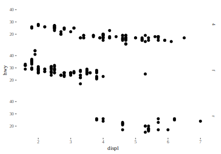
Lõpuks toome graafikul eraldi välja nende parimate autode mudelite nimed. Selleks kasutame “ggrepel” raamatukogu funktsiooni geom_label_repel().
ggplot(mpg, aes(displ, hwy)) +
geom_point(aes(colour = class))+
geom_point(size = 3, shape = 1, data = best_in_class) +
geom_label_repel(aes(label = model), data = best_in_class, cex = 2)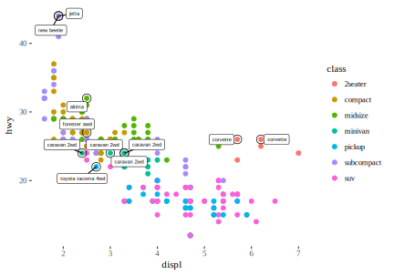
7.4 Facet – pisigraafik
Kui teil on mitmeid muutujaid või nende alamhulki, on teil kaks võimalust.
grupeeri pidevad muutujad faktormuutujate tasemete järgi ja kasuta color, fill, shape, size alpha parameetreid, et erinevatel gruppidel vahet teha.
grupeeri samamoodi ja kasuta facet-it, et iga grupp omaenda paneelile panna.
#here we separate different classes of cars into different colors
p <- ggplot(mpg, aes(displ, hwy))
p + geom_point(aes(colour = class))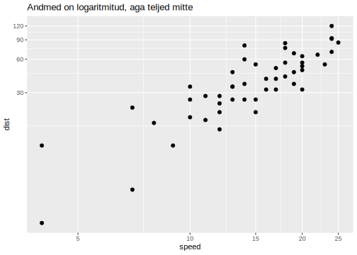
p + geom_point() +
facet_wrap(~ class)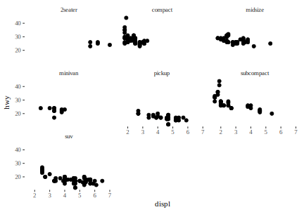
p + geom_point() +
facet_wrap(~ class, nrow = 2)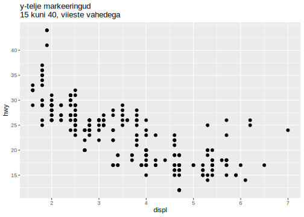
Kui me tahame kahe muutuja kõigi kombinatsioonide vastu paneele, siis kasuta facet_grid() funktsiooni.
p + geom_point() +
facet_grid(drv ~ cyl)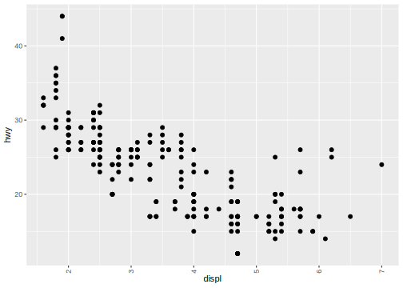
- “drv” – drive - 4(-wheel), f(orward), r(ear).
- “cyl” – cylinders - 4, 5, 6, or 8.
Kasutades punkti . on võimalik asetada kõik alamgraafikud kõrvuti (. ~ var) või üksteise peale (var ~ .).
p + geom_point() +
facet_grid(. ~ drv)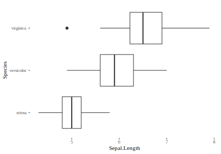
p + geom_point() +
facet_grid(drv ~ .)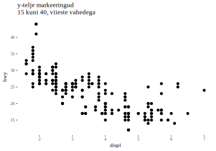
7.5 Mitu graafikut paneelidena ühel joonisel
Kõigepealt tooda komponentgraafikud ggplot() abil ja tee nendest graafilised objektid. Näiteks nii:
library(tidyverse)
i1 <- ggplot(data= iris, aes(x=Sepal.Length)) + geom_histogram()
i2 <- ggplot(data= iris, aes(x=Sepal.Length)) + geom_density()Seejäral, kasuta funktsioon gridExtra::grid.arrange() et graafikud kõrvuti panna
library(gridExtra)
grid.arrange(i2, i1, nrow = 1) # ncol = 2 also works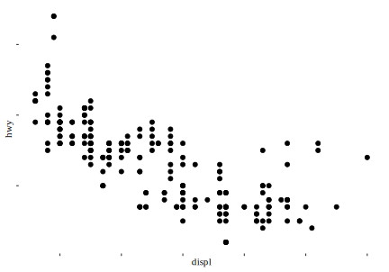